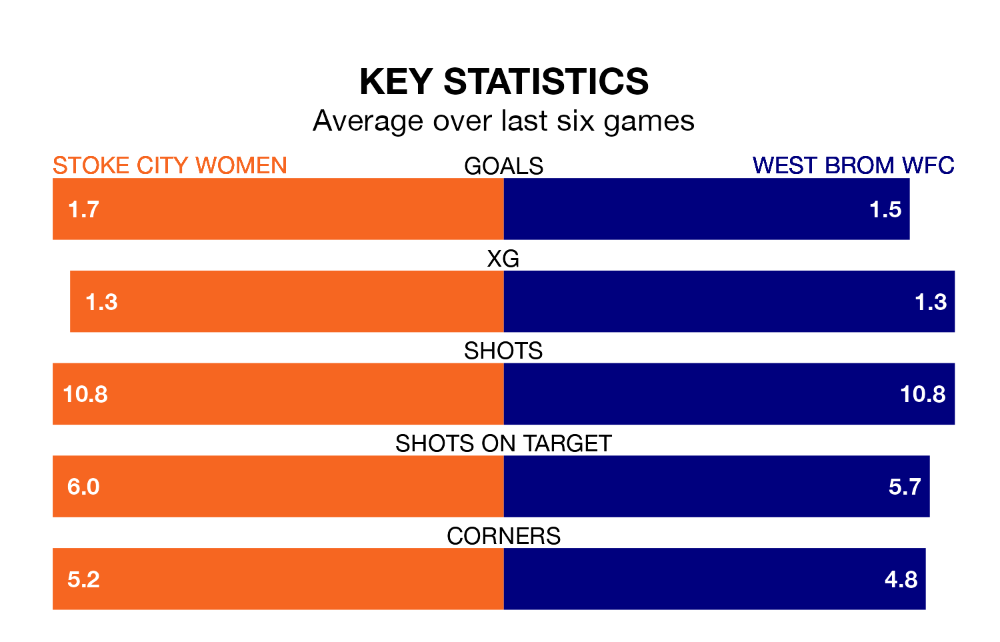

Stoke City Women host West Brom WFC on Sunday in the Women's National League Premier Division North.
In their last league match, on March 31, Stoke City drew with Halifax Women 1-1 at home.
West Brom WFC won, 1-0 at home against Fylde Women.
With 30 goals in 17 games so far this season, Stoke City are scoring more than average in the league with 1.8 goals per game. But they are conceding more than average too, letting in 30 goals at a rate of 1.8 per game.
West Brom WFC, meanwhile, are below average scorers, with 1.4 goals per game, compared to a league average of 1.5. They have also conceded 1.4 goals per game.
The hosts are in reasonable form in the Women's National League Premier Division North, with three wins and two draws from their last six games.
With four wins and a draw over that period, the away team's form is slightly better – they have taken 13 points from 18, compared to Stoke City's 11.
In the last five years, Stoke City and West Brom WFC have played each other on five occasions. Stoke City won two of them and West Brom WFC three.
On average, Stoke City scored 1.2 goals and West Brom WFC 1.4 in those matches.
Their last meeting was on August 20, when West Brom WFC won 3-1 at home.
West Brom WFC are fifth in the table after 20 games, of which they have won eight and drawn five, earning 29 points.
Stoke City are two places behind West Brom WFC in seventh, with seven wins and four draws putting them on 25 points.
Updated: 11:31 (UTC), 15/04/24